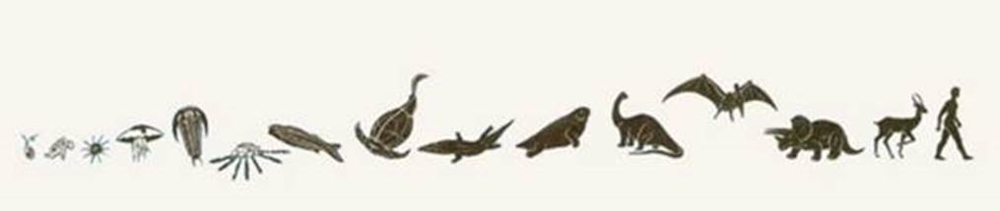
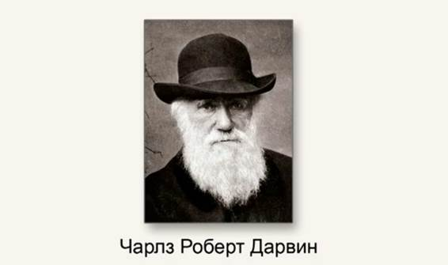

Систематика – раздел биологии, занимающийся описанием, обозначением и классификацией существующих и вымерших организмов по таксонам. Главное в систематике в том, что мы всегда распределяем на группы по общему признаку, и таких групп может быть множество – крупные, внутри которых более мелкие, которые делятся еще на более мелкие и так далее. Систематика умеет упорядочить любые группы разнородных объектов. Файловая система компьютера – это прекрасный пример систематики. Внутри какой-то большой корневой папки вложены папки поменьше, в этих более мелких папках находятся еще папочки, в которых также находятся еще мелкие папки, и в конце мы сталкиваемся уже с реальными файлами , содержащими информацию. Примером может быть адрес на конверте: вначале мы указываем большую группу – страну, далее идет группа поменьше – город, потом еще меньше – район, улица и в конце уже квартира. Это примеры систематики в самых разных областях нашей жизни.
Классификация есть результат систематики. Крупные группы вмещают в себя более мелкие, которые, в свою очередь, делятся на еще более мелкие. Примерно, как в армии: дивизия – крупная группа, которая, в свою очередь, состоит из более мелких подразделений – батальонов, рот, взводов, отделений.
Группы разного размера имеют разный ранг. Ранги систематических групп, или таксонов,
бывают самыми разными – большими, как дивизия в армии, или маленькими, как рота.
Таксон – искусственно выделенная группа организмов, объединяемых на основании общих свойств и признаков, достаточно обособленная, чтобы ей можно было присвоить определенную таксономическую категорию того или иного ранга, наименьшей таксономической единицей является вид. Если мы говорим о систематике живых организмов, то она показывает не только способ их удобно упорядочить при попадании в одну группу, потому что они похожи друг на друга. Если они похожи, то мы должны задуматься: может быть, они не случайно похожи, может быть, сходство живых организмов говорит об их родстве в эволюции. Получается, что систематика живых организмов – не только удобный способ в уме их распределить, систематика живых организмов показывает нам эволюционные изменения в живой природе (рис. 1).

Рис. 1. Эволюция живой природы (Источник)
Систематика должна отражать эволюцию живой природы, об этом писал еще Чарльз
Дарвин (рис. 2).

Рис. 2. Чарльз Дарвин (Источник)
Систематика позволяет изучить разнообразие растений, то есть разнообразие всей живой природы. Мы можем вначале изучать крупные группы, крупные таксоны, ознакомиться со всем царством растений, потом более мелкие группы, а в них еще более мелкие, и таким образом происходит знакомство с разнообразием растений. Это темы других наших уроков, посвященных семействам.
Список литературы
1. Пасечник В.В. Биология 6 класс. Бактерии, грибы, растения. – Дрофа, 2011.
2. Корчагина В.А. Биология 6-7 классы. Растения, бактерии, грибы, лишайники. – 1993.
3. Пономарева И.Н., Корнилова О.А., Кучменко В.С. Биология 6 класс. – 2008.
Домашнее задание
1. Что такое систематика и какова ее роль?
2. Что отражает систематика?
3. Стр. 221 № 1, 2, 3. Учебник Пасечник В.В. Биология 6 класс. Бактерии, грибы, растения. – Дрофа, 2011.
Дополнительные рекомендованные ссылки на ресурсы сети Интернет
1. Интернет-портал Festival.1september.ru (Источник).
2. Интернет-портал Agrocounsel.ru (Источник).
3. Интернет-портал 5klass.net (Источник).